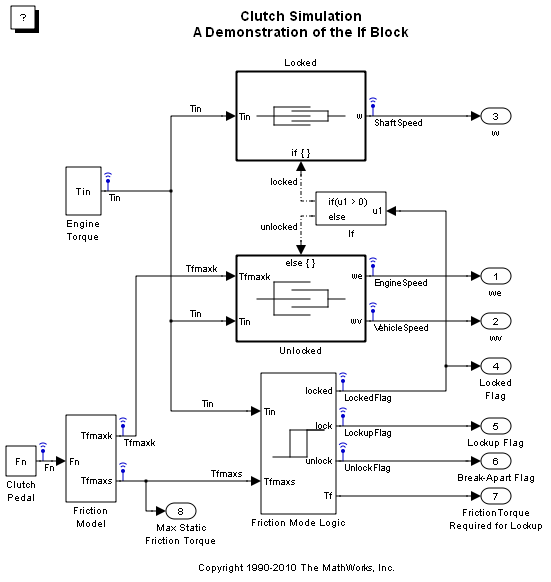
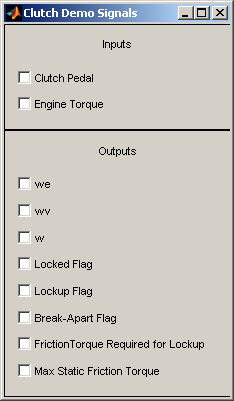
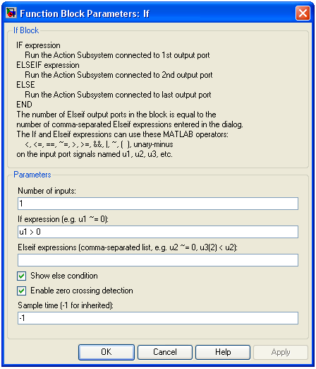
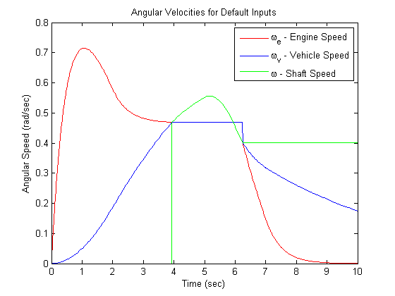

Modeling Clutch Lock-Up Using If Blocks
This demonstration shows how to use If/Else subsystems to build a clutch model. An 'If' subsystem models the clutch dynamics in the locked position while an 'Else' subsystem models the unlocked position. One or the other is enabled using the 'If' block. The dot-dashed lines from the 'If' block denote control signals, which are used to enable If/Else (or other conditional) subsystems.
This is an alternative to the clutch model with enabled subsystems - sldemo_clutch.mdl (open the other clutch model).
Contents
Analysis and Physics
The clutch system in this example consists of two plates that transmit torque between the engine and transmission. There are two distinct modes of operation:
1) slipping - the two plates have differing angular velocities
2) lockup - the two plates rotate together.
Handling the transition between these two modes presents a modeling challenge. As the system loses a degree of freedom upon lockup, the transmitted torque goes through a step discontinuity. The magnitude of the torque drops from the maximum value supported by the friction capacity to a value that is necessary to keep the two halves of the system spinning at the same rate. The reverse transition, break-apart, is likewise challenging, as the torque transmitted by the clutch plates exceeds the friction capacity.
- Note: You can find a detailed analysis of this system, including equations and diagrams, in the demo for the clutch model with enabled subsystems.
Modeling
You can use the following two methods for solving this problem:
1) Compute the clutch torque transmitted at all times, and employ this value directly in the model
2) Use two different dynamic models and switch between them at the appropriate times
Simulink® can model either method. In this example, we describe a simulation for the second method. Switching between two dynamic models must be performed with care to ensure that the initialized states of the new model match the state values immediately prior to the switch. In either approach, Simulink facilitates accurate simulation due to its ability to recognize the precise moments at which transitions between lockup and slipping occur.
Opening the Model and Running the Simulation
To open this model type sldemo_clutch_if in MATLAB® terminal (click on the hyperlink if you are using MATLAB Help).
When the model is open, press the "Play" button on the model toolbar to run the simulation.
 Figure 1: Top level diagram for the clutch model
- Note: The model logs relevant data to MATLAB workspace in a structure called sldemo_clutch_if_output. Logged signals have a blue indicator (see the model). Read more about Signal Logging in Simulink Help.
The 'If' Block
The 'If' block uses the LockedFlag signal to switch between the 'Locked' and 'Unlocked' subsystems. Double click on the 'If' block it in the model to set its parameters (see Figure 2). LockedFlag represents the status of the clutch. LockedFlag = 1 if the clutch is locked and LockedFlag = 0 if the clutch is unlocked.

Figure 2: Setting 'If' block parameters
Other Blocks and Subsystems
The other components of this model are similar to those used in the clutch model with enabled subsystems (open the other clutch model). See a detailed description in Building a Clutch Lock-Up Model demo.
Results
The inputs for this model are the same as for the model that uses enabled subsystems (sldemo_clutch.mdl). System velocities behave as shown in Figure 3 below. As expected, the results obtained from sldemo_clutch.mdl and sldemo_clutch_if.mdl are identical.
Figure 3: Angular velocities of the engine, vehicle and shaft for default inputs
Closing Model
Close the model. Clear generated data.
Conclusions
This example shows how to use 'If' blocks in Simulink to model a system with topological discontinuities. This is an alternative to using enabled subsystems.